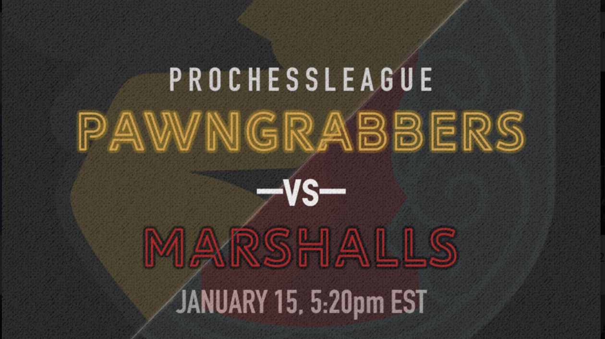

Pittsburgh Falls to Marshalls in Tight Match, 9-7
Recap of Pawngrabbers vs. Marshalls, Jan 15, 2019
After a rough start to the 2019 PRO Chess League campaign, the Pittsburgh Pawngrabbers dropped their second game of the season against a well-motivated New York Marshalls team. The Pawngrabbers were able to keep it close up until the third round when the Marshalls were finally able to pull away for a decisive win.
Pawngrabbers General Manager Isaac Steincamp tweeted after the match:
Bitter pill to swallow for the @pghpawngrabbers. Match got away in the end, but the team made key progressions from last week. Unfortunate that Erenburg was sick for his @PROChessLeague debut, but Awonder and Minh did a great job of keeping the match tight. #nervesofsteel
— Isaac Steincamp (@isaackaito) January 16, 2019
While the result was disappointing, the Pawngrabbers have several positives to look up to. GM Awonder Liang continues to be a juggernaut on the team winning 3 out of his 4 rounds. His dominant performance in the first round can be seen below:
IM Tuan Minh Le, a second year veteran, also had a good showing drawing 2 rounds and notching a win against FM Aaron Jacobson. However, the team failed to overcome a Marshalls team that capitalized on mistakes and managed to hold on to an early lead. GM Sergey Erenburg struggled throughout the match, but was playing through an illness which most definitely factored into his weakened game yesterday.
While the Pawngrabbers are currently 0-2, there is still much to look forward to going into the crucial game against Montclair. Awonder is in wonderful form and the other players in the lineup seem hungry to prove themselves against their bitter rivals.
Next Week: vs Montclair (1/22)
The Pawngrabbers play rivals Montclair Sopranos next week in what is expected to be a heated matchup. The Pittsburgh Pawngrabbers have picked up a couple players from the Sopranos including GM Evgeny Postny and NM James Canty III which should make the matchup next week quite interesting. The Sopranos are off to a good start sitting at 4th in the division, however, the Pawngrabbers look ready for a challenge.
Popular Posts
Categories
- Opening
- Middlegame
- Endgame
Archives
- 2018
- 2017
- 2016